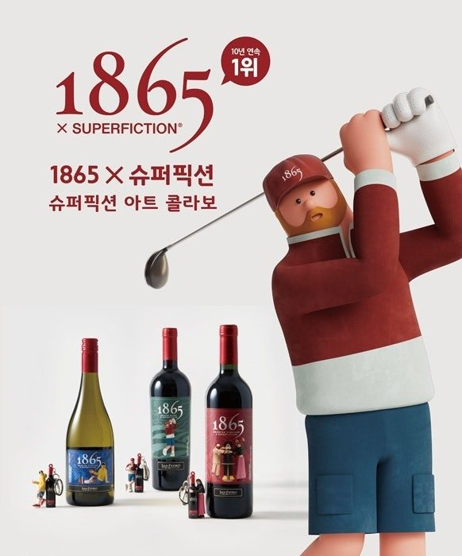
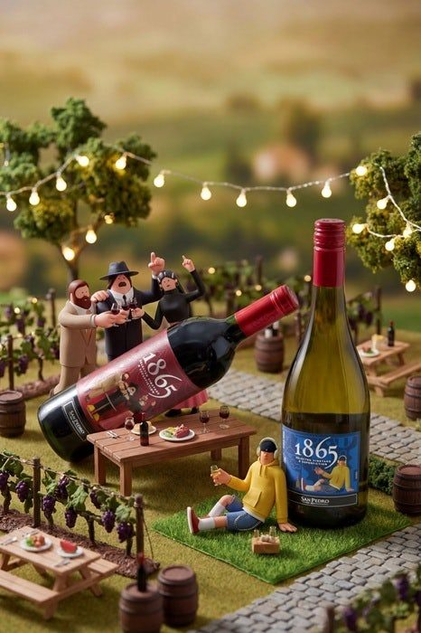
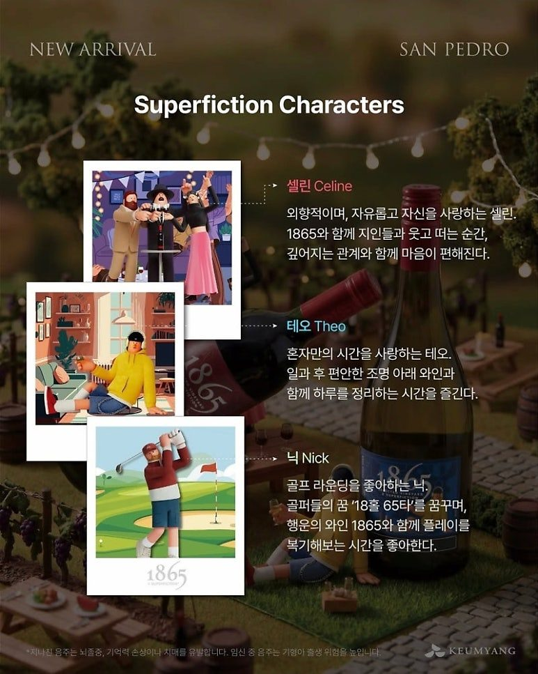
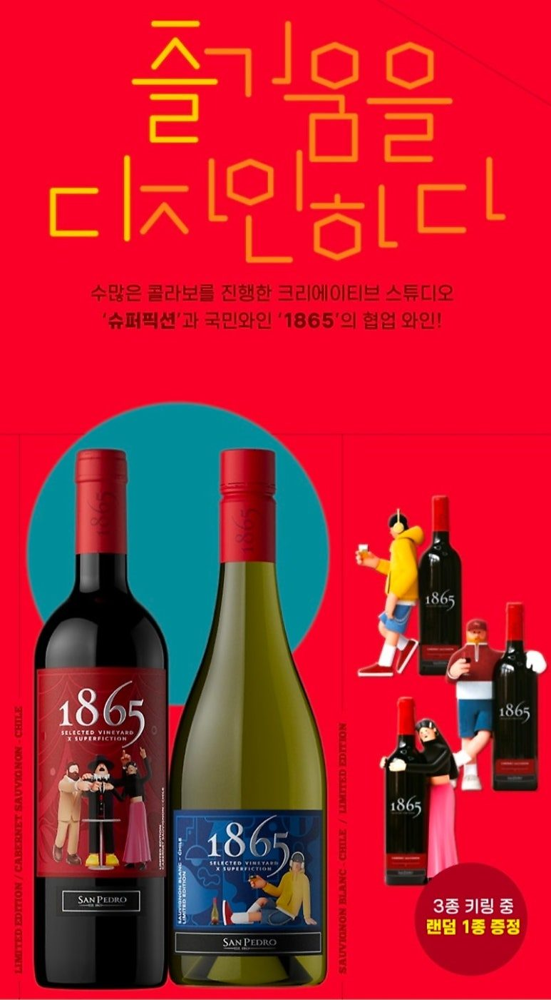
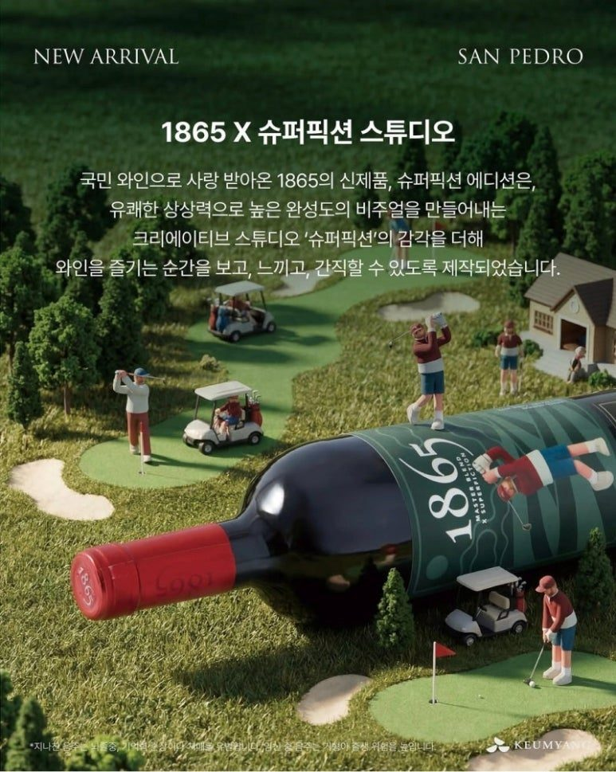
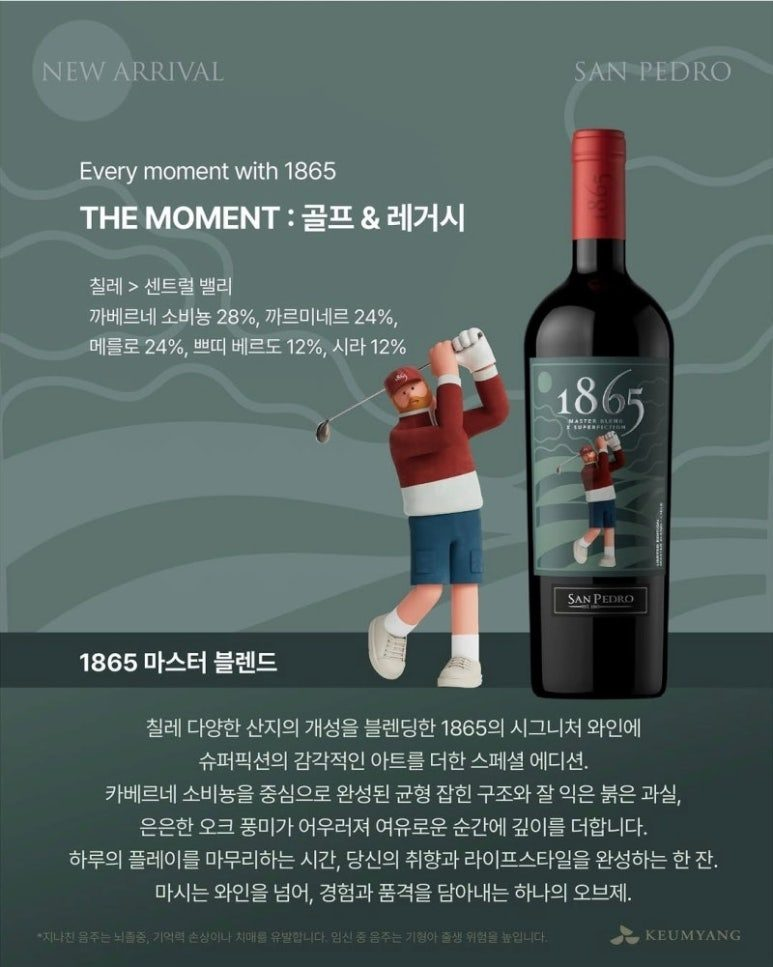
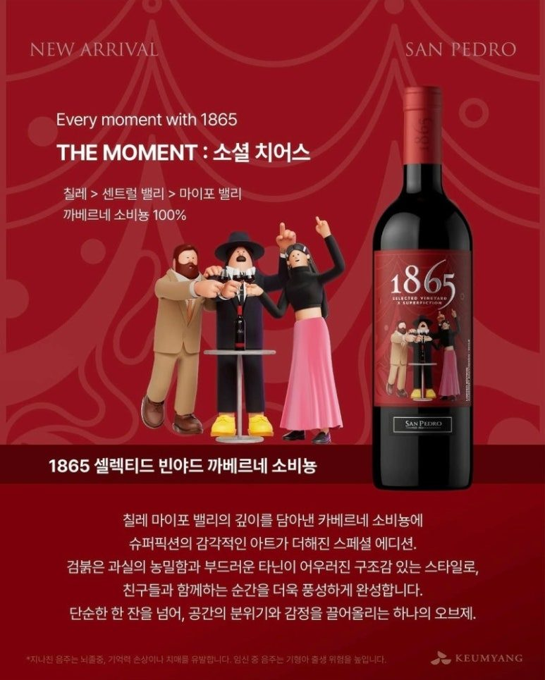
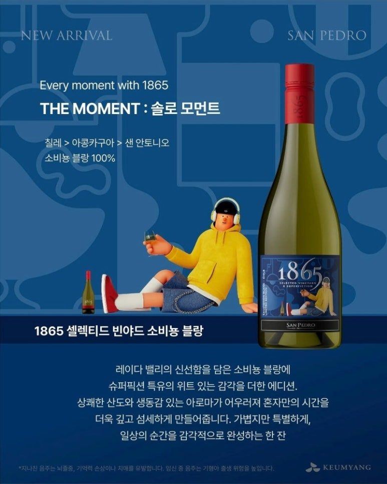
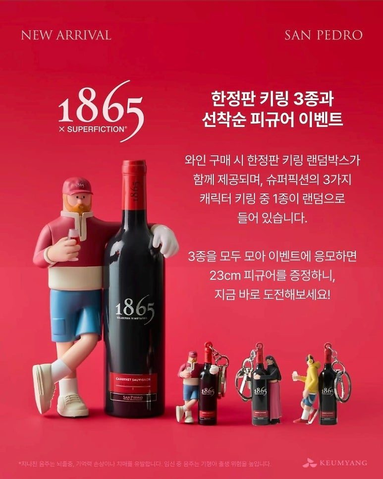
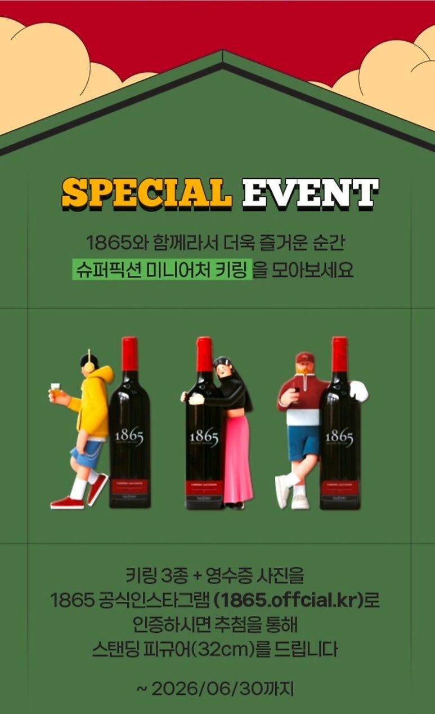

골프모임 선물 추천 1865 슈퍼픽션 콜라보 에디션
국민 와인으로 불리는 1865가 크리에이티브 스튜디오 슈퍼픽션과 협업하여 스페셜 에디션을 선보였습니다. 이번 협업은 1865가 가진 전통적인 신뢰도에 슈퍼픽션 특유의 유쾌한 상상력을 더해 와인을 단순한 음료 이상의 가치를 지닌 오브제로 재탄생시켰습니다. 일상의 소중한 순간들을 세 가지 캐릭터의 이야기로 풀어낸 이번 에디션은 각각의 와인이 가진 맛과 향 그리고 그에 어울리는 라이프스타일을 시각적으로 연결하여 소비자들에게 새로운 경험을 선사합니다.
즐거움을 디자인하다
1865와 슈퍼픽션의 특별한 만남

평범한 일상을 예술로 바꾸는 방법,
1865 x Superfiction Edition. 🖌️🍷
국민 와인으로 불리는 1865가 크리에이티브 스튜디오 슈퍼픽션과 협업하여 스페셜 에디션을 선보였습니다. 이번 협업은 1865가 가진 전통적인 신뢰도에 슈퍼픽션 특유의 유쾌한 상상력을 더해 와인을 단순한 음료 이상의 가치를 지닌 오브제로 재탄생시켰습니다. 일상의 소중한 순간들을 세 가지 캐릭터의 이야기로 풀어낸 이번 에디션은 각각의 와인이 가진 맛과 향 그리고 그에 어울리는 라이프스타일을 시각적으로 연결하여 소비자들에게 새로운 경험을 선사합니다.


⛳️ 필드 위의 승리, 닉(Nick)
🎉 파티의 주인공, 셀린(Celine)
🎧 나만의 쉼표, 테오(Theo)


1. 마스터 블렌드 (Green): 체리와 바닐라의 묵직한 풍미. 스테이크나 양갈비와 함께할 때 최고의 밸런스를 보여줍니다.
2. 카베르네 소비뇽 (Red): 블랙베리의 진한 향과 부드러운 탄닌. 불고기나 갈비찜 같은 육류 요리와 찰떡궁합!
3. 소비뇽 블랑 (Blue): 시트러스의 청량함 그 자체. 신선한 해산물이나 가벼운 샐러드에 곁들여보세요.

Every moment with 1865
당신의 모든 순간을 디자인하는 와인

닉과 함께하는 마스터 블렌드 골프와 레거시
가장 먼저 소개할 1865 마스터 블렌드는 골프 라운딩을 즐기는 캐릭터 닉과 함께 구성되었습니다. 칠레 센트럴 밸리의 산지별 개성을 블렌딩한 이 와인은 카베르네 소비뇽을 중심으로 까르미네르 메를로 쁘띠 베르도 시라가 정교하게 조화되어 균형 잡힌 구조감을 보여줍니다. 잘 익은 체리의 풍미와 바닐라 그리고 다크 초콜릿의 묵직한 조화는 필드 위 승리의 순간을 닮아 있습니다.
테이스팅 노트 잘 익은 붉은 과실의 향과 은은한 오크 풍미가 어우러진 깊은 바디감
페어링 추천 스테이크 양갈비 등 풍미가 강한 육류 요리 또는 숙성 치즈

셀린과 함께하는 카베르네 소비뇽 파티와 소셜 치어스
1865 셀렉티드 빈야드 카베르네 소비뇽은 자유로운 감성의 캐릭터 셀린과 함께 소셜 치어스라는 테마를 제안합니다. 마이포 밸리의 깊이를 담아낸 이 와인은 농밀한 검붉은 과실향과 부드러운 탄닌이 특징입니다. 친구들과 함께 웃고 떠드는 파티의 즐거움을 극대화해주는 클래식한 매력을 지니고 있으며 풍부한 블랙베리 향이 입안을 가득 채우며 편안한 목 넘김을 선사합니다.
테이스팅 노트 풍부한 블랙베리 향과 부드러운 탄닌이 주는 세련된 균형감
페어링 추천 불고기 갈비찜 등 양념된 육류 요리 및 구운 채소

테오와 함께하는 소비뇽 블랑 휴식과 솔로 모먼트
혼자만의 시간을 소중히 여기는 테오의 라이프스타일은 1865 셀렉티드 빈야드 소비뇽 블랑과 연결됩니다. 칠레 아콩카구아 샌 안토니오 지역의 신선함을 담아낸 이 와인은 상쾌한 산도와 생동감 넘치는 아로마가 특징입니다. 자몽과 시트러스 계열의 싱그러운 향은 나른한 오후나 일과 후 혼자만의 고요한 시간에 기분 좋은 청량감을 선사합니다.
테이스팅 노트: 싱그러운 자몽과 시트러스 향이 돋보이는 깔끔한 산미
페어링 추천: 신선한 해산물 샐러드 및 가벼운 핑거 푸드
단순한 한 잔을 넘어 공간의 분위기와 감정을 끌어올리는 하나의 오브제


한정판 키링과 피규어 증정 이벤트 안내
이벤트 기간: ~ 2026. 06. 30까지
참여 방법: 키링 3종 + 영수증 인증 시 스탠딩 피규어 추첨 증정
이번 에디션 출시를 기념하여 특별한 이벤트가 진행됩니다. 와인 구매 시 닉 셀린 테오 캐릭터가 담긴 한정판 미니미 키링 3종 중 1종이 랜덤으로 제공됩니다. 또한 키링 3종을 모두 수집하여 영수증 사진과 함께 공식 인스타그램으로 인증할 경우 추첨을 통해 32센티미터 크기의 스탠딩 피규어를 증정합니다. 이벤트는 2026년 6월 30일까지 진행되며 선착순 증정품인 키링은 재고 소진 시 조기 종료될 수 있습니다.
1865와 슈퍼픽션이 제안하는 이번 에디션은 삶의 태도와 와인을 즐기는 목적을 하나로 묶어줍니다. 도전 후에 마시는 한 잔 즐거운 만남을 축하하는 한 잔 그리고 온전한 휴식을 위한 한 잔까지 당신의 모든 소중한 순간을 1865와 함께 더욱 특별하게 기록해 보시기 바랍니다.
010-8078-7493 문자 주시면 가장 빠르게 안내해 드립니다.
이 글은 땡큐와인 네이버 블로그에 먼저 올린 글이에요.